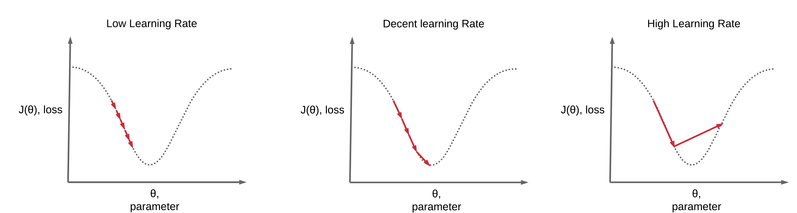
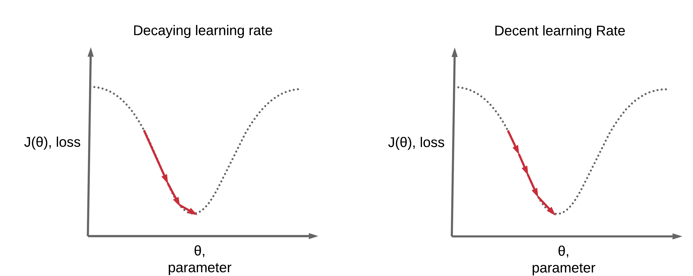

Learning Rate Scheduling¶
Run Jupyter Notebook
You can run the code for this section in this jupyter notebook link.
Optimization Algorithm: Mini-batch Stochastic Gradient Descent (SGD)¶
- We will be using mini-batch gradient descent in all our examples here when scheduling our learning rate
- Combination of batch gradient descent & stochastic gradient descent
- \theta = \theta - \eta \cdot \nabla J(\theta, x^{i: i+n}, y^{i:i+n})
- Characteristics
- Compute the gradient of the lost function w.r.t. parameters for n sets of training sample (n input and n label), \nabla J(\theta, x^{i: i+n}, y^{i:i+n})
- Use this to update our parameters at every iteration
- Typically in deep learning, some variation of mini-batch gradient is used where the batch size is a hyperparameter to be determined
Learning Intuition Recap¶
- Learning process
- Original parameters \rightarrow given input, get output \rightarrow compare with labels \rightarrow get loss with comparison of input/output \rightarrow get gradients of loss w.r.t parameters \rightarrow update parameters so model can churn output closer to labels \rightarrow repeat
- For a detailed mathematical account of how this works and how to implement from scratch in Python and PyTorch, you can read our forward- and back-propagation and gradient descent post.
Learning Rate Pointers¶

- Update parameters so model can churn output closer to labels, lower loss
- \theta = \theta - \eta \cdot \nabla J(\theta, x^{i: i+n}, y^{i:i+n})
- If we set \eta to be a large value \rightarrow learn too much (rapid learning)
- Unable to converge to a good local minima (unable to effectively gradually decrease your loss, overshoot the local lowest value)
- If we set \eta to be a small value \rightarrow learn too little (slow learning)
- May take too long or unable to convert to a good local minima
Need for Learning Rate Schedules¶
- Benefits
- Converge faster
- Higher accuracy 
Top Basic Learning Rate Schedules¶
- Step-wise Decay
- Reduce on Loss Plateau Decay
Step-wise Learning Rate Decay¶
Step-wise Decay: Every Epoch¶
- At every epoch,
- \eta_t = \eta_{t-1}\gamma
- \gamma = 0.1
- Optimization Algorithm 4: SGD Nesterov
- Modification of SGD Momentum
- v_t = \gamma v_{t-1} + \eta \cdot \nabla J(\theta - \gamma v_{t-1}, x^{i: i+n}, y^{i:i+n})
- \theta = \theta - v_t
- Modification of SGD Momentum
- Practical example
- Given \eta_t = 0.1 and $ \gamma = 0.01$
- Epoch 0: \eta_t = 0.1
- Epoch 1: \eta_{t+1} = 0.1 (0.1) = 0.01
- Epoch 2: \eta_{t+2} = 0.1 (0.1)^2 = 0.001
- Epoch n: \eta_{t+n} = 0.1 (0.1)^n
Code for step-wise learning rate decay at every epoch
import torch import torch.nn as nn import torchvision.transforms as transforms import torchvision.datasets as dsets # Set seed torch.manual_seed(0) # Where to add a new import from torch.optim.lr_scheduler import StepLR ''' STEP 1: LOADING DATASET ''' train_dataset = dsets.MNIST(root='./data', train=True, transform=transforms.ToTensor(), download=True) test_dataset = dsets.MNIST(root='./data', train=False, transform=transforms.ToTensor()) ''' STEP 2: MAKING DATASET ITERABLE ''' batch_size = 100 n_iters = 3000 num_epochs = n_iters / (len(train_dataset) / batch_size) num_epochs = int(num_epochs) train_loader = torch.utils.data.DataLoader(dataset=train_dataset, batch_size=batch_size, shuffle=True) test_loader = torch.utils.data.DataLoader(dataset=test_dataset, batch_size=batch_size, shuffle=False) ''' STEP 3: CREATE MODEL CLASS ''' class FeedforwardNeuralNetModel(nn.Module): def __init__(self, input_dim, hidden_dim, output_dim): super(FeedforwardNeuralNetModel, self).__init__() # Linear function self.fc1 = nn.Linear(input_dim, hidden_dim) # Non-linearity self.relu = nn.ReLU() # Linear function (readout) self.fc2 = nn.Linear(hidden_dim, output_dim) def forward(self, x): # Linear function out = self.fc1(x) # Non-linearity out = self.relu(out) # Linear function (readout) out = self.fc2(out) return out ''' STEP 4: INSTANTIATE MODEL CLASS ''' input_dim = 28*28 hidden_dim = 100 output_dim = 10 model = FeedforwardNeuralNetModel(input_dim, hidden_dim, output_dim) ''' STEP 5: INSTANTIATE LOSS CLASS ''' criterion = nn.CrossEntropyLoss() ''' STEP 6: INSTANTIATE OPTIMIZER CLASS ''' learning_rate = 0.1 optimizer = torch.optim.SGD(model.parameters(), lr=learning_rate, momentum=0.9, nesterov=True) ''' STEP 7: INSTANTIATE STEP LEARNING SCHEDULER CLASS ''' # step_size: at how many multiples of epoch you decay # step_size = 1, after every 1 epoch, new_lr = lr*gamma # step_size = 2, after every 2 epoch, new_lr = lr*gamma # gamma = decaying factor scheduler = StepLR(optimizer, step_size=1, gamma=0.1) ''' STEP 7: TRAIN THE MODEL ''' iter = 0 for epoch in range(num_epochs): # Decay Learning Rate scheduler.step() # Print Learning Rate print('Epoch:', epoch,'LR:', scheduler.get_lr()) for i, (images, labels) in enumerate(train_loader): # Load images images = images.view(-1, 28*28).requires_grad_() # Clear gradients w.r.t. parameters optimizer.zero_grad() # Forward pass to get output/logits outputs = model(images) # Calculate Loss: softmax --> cross entropy loss loss = criterion(outputs, labels) # Getting gradients w.r.t. parameters loss.backward() # Updating parameters optimizer.step() iter += 1 if iter % 500 == 0: # Calculate Accuracy correct = 0 total = 0 # Iterate through test dataset for images, labels in test_loader: # Load images to a Torch Variable images = images.view(-1, 28*28) # Forward pass only to get logits/output outputs = model(images) # Get predictions from the maximum value _, predicted = torch.max(outputs.data, 1) # Total number of labels total += labels.size(0) # Total correct predictions correct += (predicted == labels).sum() accuracy = 100 * correct / total # Print Loss print('Iteration: {}. Loss: {}. Accuracy: {}'.format(iter, loss.item(), accuracy))
Epoch: 0 LR: [0.1] Iteration: 500. Loss: 0.15292978286743164. Accuracy: 96 Epoch: 1 LR: [0.010000000000000002] Iteration: 1000. Loss: 0.1207798570394516. Accuracy: 97 Epoch: 2 LR: [0.0010000000000000002] Iteration: 1500. Loss: 0.12287932634353638. Accuracy: 97 Epoch: 3 LR: [0.00010000000000000003] Iteration: 2000. Loss: 0.05614742264151573. Accuracy: 97 Epoch: 4 LR: [1.0000000000000003e-05] Iteration: 2500. Loss: 0.06775809079408646. Accuracy: 97 Iteration: 3000. Loss: 0.03737065941095352. Accuracy: 97
Step-wise Decay: Every 2 Epochs¶
- At every 2 epoch,
- \eta_t = \eta_{t-1}\gamma
- \gamma = 0.1
- Optimization Algorithm 4: SGD Nesterov
- Modification of SGD Momentum
- v_t = \gamma v_{t-1} + \eta \cdot \nabla J(\theta - \gamma v_{t-1}, x^{i: i+n}, y^{i:i+n})
- \theta = \theta - v_t
- Modification of SGD Momentum
- Practical example
- Given \eta_t = 0.1 and \gamma = 0.01
- Epoch 0: \eta_t = 0.1
- Epoch 1: \eta_{t+1} = 0.1
- Epoch 2: \eta_{t+2} = 0.1 (0.1) = 0.01
Code for step-wise learning rate decay at every 2 epoch
import torch import torch.nn as nn import torchvision.transforms as transforms import torchvision.datasets as dsets # Set seed torch.manual_seed(0) # Where to add a new import from torch.optim.lr_scheduler import StepLR ''' STEP 1: LOADING DATASET ''' train_dataset = dsets.MNIST(root='./data', train=True, transform=transforms.ToTensor(), download=True) test_dataset = dsets.MNIST(root='./data', train=False, transform=transforms.ToTensor()) ''' STEP 2: MAKING DATASET ITERABLE ''' batch_size = 100 n_iters = 3000 num_epochs = n_iters / (len(train_dataset) / batch_size) num_epochs = int(num_epochs) train_loader = torch.utils.data.DataLoader(dataset=train_dataset, batch_size=batch_size, shuffle=True) test_loader = torch.utils.data.DataLoader(dataset=test_dataset, batch_size=batch_size, shuffle=False) ''' STEP 3: CREATE MODEL CLASS ''' class FeedforwardNeuralNetModel(nn.Module): def __init__(self, input_dim, hidden_dim, output_dim): super(FeedforwardNeuralNetModel, self).__init__() # Linear function self.fc1 = nn.Linear(input_dim, hidden_dim) # Non-linearity self.relu = nn.ReLU() # Linear function (readout) self.fc2 = nn.Linear(hidden_dim, output_dim) def forward(self, x): # Linear function out = self.fc1(x) # Non-linearity out = self.relu(out) # Linear function (readout) out = self.fc2(out) return out ''' STEP 4: INSTANTIATE MODEL CLASS ''' input_dim = 28*28 hidden_dim = 100 output_dim = 10 model = FeedforwardNeuralNetModel(input_dim, hidden_dim, output_dim) ''' STEP 5: INSTANTIATE LOSS CLASS ''' criterion = nn.CrossEntropyLoss() ''' STEP 6: INSTANTIATE OPTIMIZER CLASS ''' learning_rate = 0.1 optimizer = torch.optim.SGD(model.parameters(), lr=learning_rate, momentum=0.9, nesterov=True) ''' STEP 7: INSTANTIATE STEP LEARNING SCHEDULER CLASS ''' # step_size: at how many multiples of epoch you decay # step_size = 1, after every 2 epoch, new_lr = lr*gamma # step_size = 2, after every 2 epoch, new_lr = lr*gamma # gamma = decaying factor scheduler = StepLR(optimizer, step_size=2, gamma=0.1) ''' STEP 7: TRAIN THE MODEL ''' iter = 0 for epoch in range(num_epochs): # Decay Learning Rate scheduler.step() # Print Learning Rate print('Epoch:', epoch,'LR:', scheduler.get_lr()) for i, (images, labels) in enumerate(train_loader): # Load images as Variable images = images.view(-1, 28*28).requires_grad_() # Clear gradients w.r.t. parameters optimizer.zero_grad() # Forward pass to get output/logits outputs = model(images) # Calculate Loss: softmax --> cross entropy loss loss = criterion(outputs, labels) # Getting gradients w.r.t. parameters loss.backward() # Updating parameters optimizer.step() iter += 1 if iter % 500 == 0: # Calculate Accuracy correct = 0 total = 0 # Iterate through test dataset for images, labels in test_loader: # Load images to a Torch Variable images = images.view(-1, 28*28).requires_grad_() # Forward pass only to get logits/output outputs = model(images) # Get predictions from the maximum value _, predicted = torch.max(outputs.data, 1) # Total number of labels total += labels.size(0) # Total correct predictions correct += (predicted == labels).sum() accuracy = 100 * correct / total # Print Loss print('Iteration: {}. Loss: {}. Accuracy: {}'.format(iter, loss.item(), accuracy))
Epoch: 0 LR: [0.1] Iteration: 500. Loss: 0.15292978286743164. Accuracy: 96 Epoch: 1 LR: [0.1] Iteration: 1000. Loss: 0.11253029108047485. Accuracy: 96 Epoch: 2 LR: [0.010000000000000002] Iteration: 1500. Loss: 0.14498558640480042. Accuracy: 97 Epoch: 3 LR: [0.010000000000000002] Iteration: 2000. Loss: 0.03691177815198898. Accuracy: 97 Epoch: 4 LR: [0.0010000000000000002] Iteration: 2500. Loss: 0.03511016443371773. Accuracy: 97 Iteration: 3000. Loss: 0.029424520209431648. Accuracy: 97
Step-wise Decay: Every Epoch, Larger Gamma¶
- At every epoch,
- \eta_t = \eta_{t-1}\gamma
- \gamma = 0.96
- Optimization Algorithm 4: SGD Nesterov
- Modification of SGD Momentum
- v_t = \gamma v_{t-1} + \eta \cdot \nabla J(\theta - \gamma v_{t-1}, x^{i: i+n}, y^{i:i+n})
- \theta = \theta - v_t
- Modification of SGD Momentum
- Practical example
- Given \eta_t = 0.1 and \gamma = 0.96
- Epoch 1: \eta_t = 0.1
- Epoch 2: \eta_{t+1} = 0.1 (0.96) = 0.096
- Epoch 3: \eta_{t+2} = 0.1 (0.96)^2 = 0.092
- Epoch n: \eta_{t+n} = 0.1 (0.96)^n
Code for step-wise learning rate decay at every epoch with larger gamma
import torch import torch.nn as nn import torchvision.transforms as transforms import torchvision.datasets as dsets # Set seed torch.manual_seed(0) # Where to add a new import from torch.optim.lr_scheduler import StepLR ''' STEP 1: LOADING DATASET ''' train_dataset = dsets.MNIST(root='./data', train=True, transform=transforms.ToTensor(), download=True) test_dataset = dsets.MNIST(root='./data', train=False, transform=transforms.ToTensor()) ''' STEP 2: MAKING DATASET ITERABLE ''' batch_size = 100 n_iters = 3000 num_epochs = n_iters / (len(train_dataset) / batch_size) num_epochs = int(num_epochs) train_loader = torch.utils.data.DataLoader(dataset=train_dataset, batch_size=batch_size, shuffle=True) test_loader = torch.utils.data.DataLoader(dataset=test_dataset, batch_size=batch_size, shuffle=False) ''' STEP 3: CREATE MODEL CLASS ''' class FeedforwardNeuralNetModel(nn.Module): def __init__(self, input_dim, hidden_dim, output_dim): super(FeedforwardNeuralNetModel, self).__init__() # Linear function self.fc1 = nn.Linear(input_dim, hidden_dim) # Non-linearity self.relu = nn.ReLU() # Linear function (readout) self.fc2 = nn.Linear(hidden_dim, output_dim) def forward(self, x): # Linear function out = self.fc1(x) # Non-linearity out = self.relu(out) # Linear function (readout) out = self.fc2(out) return out ''' STEP 4: INSTANTIATE MODEL CLASS ''' input_dim = 28*28 hidden_dim = 100 output_dim = 10 model = FeedforwardNeuralNetModel(input_dim, hidden_dim, output_dim) ''' STEP 5: INSTANTIATE LOSS CLASS ''' criterion = nn.CrossEntropyLoss() ''' STEP 6: INSTANTIATE OPTIMIZER CLASS ''' learning_rate = 0.1 optimizer = torch.optim.SGD(model.parameters(), lr=learning_rate, momentum=0.9, nesterov=True) ''' STEP 7: INSTANTIATE STEP LEARNING SCHEDULER CLASS ''' # step_size: at how many multiples of epoch you decay # step_size = 1, after every 2 epoch, new_lr = lr*gamma # step_size = 2, after every 2 epoch, new_lr = lr*gamma # gamma = decaying factor scheduler = StepLR(optimizer, step_size=2, gamma=0.96) ''' STEP 7: TRAIN THE MODEL ''' iter = 0 for epoch in range(num_epochs): # Decay Learning Rate scheduler.step() # Print Learning Rate print('Epoch:', epoch,'LR:', scheduler.get_lr()) for i, (images, labels) in enumerate(train_loader): # Load images as Variable images = images.view(-1, 28*28).requires_grad_() # Clear gradients w.r.t. parameters optimizer.zero_grad() # Forward pass to get output/logits outputs = model(images) # Calculate Loss: softmax --> cross entropy loss loss = criterion(outputs, labels) # Getting gradients w.r.t. parameters loss.backward() # Updating parameters optimizer.step() iter += 1 if iter % 500 == 0: # Calculate Accuracy correct = 0 total = 0 # Iterate through test dataset for images, labels in test_loader: # Load images to a Torch Variable images = images.view(-1, 28*28) # Forward pass only to get logits/output outputs = model(images) # Get predictions from the maximum value _, predicted = torch.max(outputs.data, 1) # Total number of labels total += labels.size(0) # Total correct predictions correct += (predicted == labels).sum() accuracy = 100 * correct / total # Print Loss print('Iteration: {}. Loss: {}. Accuracy: {}'.format(iter, loss.item(), accuracy))
Epoch: 0 LR: [0.1] Iteration: 500. Loss: 0.15292978286743164. Accuracy: 96 Epoch: 1 LR: [0.1] Iteration: 1000. Loss: 0.11253029108047485. Accuracy: 96 Epoch: 2 LR: [0.096] Iteration: 1500. Loss: 0.11864850670099258. Accuracy: 97 Epoch: 3 LR: [0.096] Iteration: 2000. Loss: 0.030942382290959358. Accuracy: 97 Epoch: 4 LR: [0.09216] Iteration: 2500. Loss: 0.04521659016609192. Accuracy: 97 Iteration: 3000. Loss: 0.027839098125696182. Accuracy: 97
Pointers on Step-wise Decay¶
- You would want to decay your LR gradually when you're training more epochs
- Converge too fast, to a crappy loss/accuracy, if you decay rapidly
- To decay slower
- Larger \gamma
- Larger interval of decay
Reduce on Loss Plateau Decay¶
Reduce on Loss Plateau Decay, Patience=0, Factor=0.1¶
- Reduce learning rate whenever loss plateaus
- Patience: number of epochs with no improvement after which learning rate will be reduced
- Patience = 0
- Factor: multiplier to decrease learning rate, lr = lr*factor = \gamma
- Factor = 0.1
- Patience: number of epochs with no improvement after which learning rate will be reduced
- Optimization Algorithm: SGD Nesterov
- Modification of SGD Momentum
- v_t = \gamma v_{t-1} + \eta \cdot \nabla J(\theta - \gamma v_{t-1}, x^{i: i+n}, y^{i:i+n})
- \theta = \theta - v_t
- Modification of SGD Momentum
Code for reduce on loss plateau learning rate decay of factor 0.1 and 0 patience
import torch import torch.nn as nn import torchvision.transforms as transforms import torchvision.datasets as dsets # Set seed torch.manual_seed(0) # Where to add a new import from torch.optim.lr_scheduler import ReduceLROnPlateau ''' STEP 1: LOADING DATASET ''' train_dataset = dsets.MNIST(root='./data', train=True, transform=transforms.ToTensor(), download=True) test_dataset = dsets.MNIST(root='./data', train=False, transform=transforms.ToTensor()) ''' STEP 2: MAKING DATASET ITERABLE ''' batch_size = 100 n_iters = 6000 num_epochs = n_iters / (len(train_dataset) / batch_size) num_epochs = int(num_epochs) train_loader = torch.utils.data.DataLoader(dataset=train_dataset, batch_size=batch_size, shuffle=True) test_loader = torch.utils.data.DataLoader(dataset=test_dataset, batch_size=batch_size, shuffle=False) ''' STEP 3: CREATE MODEL CLASS ''' class FeedforwardNeuralNetModel(nn.Module): def __init__(self, input_dim, hidden_dim, output_dim): super(FeedforwardNeuralNetModel, self).__init__() # Linear function self.fc1 = nn.Linear(input_dim, hidden_dim) # Non-linearity self.relu = nn.ReLU() # Linear function (readout) self.fc2 = nn.Linear(hidden_dim, output_dim) def forward(self, x): # Linear function out = self.fc1(x) # Non-linearity out = self.relu(out) # Linear function (readout) out = self.fc2(out) return out ''' STEP 4: INSTANTIATE MODEL CLASS ''' input_dim = 28*28 hidden_dim = 100 output_dim = 10 model = FeedforwardNeuralNetModel(input_dim, hidden_dim, output_dim) ''' STEP 5: INSTANTIATE LOSS CLASS ''' criterion = nn.CrossEntropyLoss() ''' STEP 6: INSTANTIATE OPTIMIZER CLASS ''' learning_rate = 0.1 optimizer = torch.optim.SGD(model.parameters(), lr=learning_rate, momentum=0.9, nesterov=True) ''' STEP 7: INSTANTIATE STEP LEARNING SCHEDULER CLASS ''' # lr = lr * factor # mode='max': look for the maximum validation accuracy to track # patience: number of epochs - 1 where loss plateaus before decreasing LR # patience = 0, after 1 bad epoch, reduce LR # factor = decaying factor scheduler = ReduceLROnPlateau(optimizer, mode='max', factor=0.1, patience=0, verbose=True) ''' STEP 7: TRAIN THE MODEL ''' iter = 0 for epoch in range(num_epochs): for i, (images, labels) in enumerate(train_loader): # Load images as Variable images = images.view(-1, 28*28).requires_grad_() # Clear gradients w.r.t. parameters optimizer.zero_grad() # Forward pass to get output/logits outputs = model(images) # Calculate Loss: softmax --> cross entropy loss loss = criterion(outputs, labels) # Getting gradients w.r.t. parameters loss.backward() # Updating parameters optimizer.step() iter += 1 if iter % 500 == 0: # Calculate Accuracy correct = 0 total = 0 # Iterate through test dataset for images, labels in test_loader: # Load images to a Torch Variable images = images.view(-1, 28*28) # Forward pass only to get logits/output outputs = model(images) # Get predictions from the maximum value _, predicted = torch.max(outputs.data, 1) # Total number of labels total += labels.size(0) # Total correct predictions # Without .item(), it is a uint8 tensor which will not work when you pass this number to the scheduler correct += (predicted == labels).sum().item() accuracy = 100 * correct / total # Print Loss # print('Iteration: {}. Loss: {}. Accuracy: {}'.format(iter, loss.data[0], accuracy)) # Decay Learning Rate, pass validation accuracy for tracking at every epoch print('Epoch {} completed'.format(epoch)) print('Loss: {}. Accuracy: {}'.format(loss.item(), accuracy)) print('-'*20) scheduler.step(accuracy)
Epoch 0 completed Loss: 0.17087846994400024. Accuracy: 96.26 -------------------- Epoch 1 completed Loss: 0.11688263714313507. Accuracy: 96.96 -------------------- Epoch 2 completed Loss: 0.035437121987342834. Accuracy: 96.78 -------------------- Epoch 2: reducing learning rate of group 0 to 1.0000e-02. Epoch 3 completed Loss: 0.0324370414018631. Accuracy: 97.7 -------------------- Epoch 4 completed Loss: 0.022194599732756615. Accuracy: 98.02 -------------------- Epoch 5 completed Loss: 0.007145566865801811. Accuracy: 98.03 -------------------- Epoch 6 completed Loss: 0.01673538237810135. Accuracy: 98.05 -------------------- Epoch 7 completed Loss: 0.025424446910619736. Accuracy: 98.01 -------------------- Epoch 7: reducing learning rate of group 0 to 1.0000e-03. Epoch 8 completed Loss: 0.014696130529046059. Accuracy: 98.05 -------------------- Epoch 8: reducing learning rate of group 0 to 1.0000e-04. Epoch 9 completed Loss: 0.00573748117312789. Accuracy: 98.04 -------------------- Epoch 9: reducing learning rate of group 0 to 1.0000e-05.
Reduce on Loss Plateau Decay, Patience=0, Factor=0.5¶
- Reduce learning rate whenever loss plateaus
- Patience: number of epochs with no improvement after which learning rate will be reduced
- Patience = 0
- Factor: multiplier to decrease learning rate, lr = lr*factor = \gamma
- Factor = 0.5
- Patience: number of epochs with no improvement after which learning rate will be reduced
- Optimization Algorithm 4: SGD Nesterov
- Modification of SGD Momentum
- v_t = \gamma v_{t-1} + \eta \cdot \nabla J(\theta - \gamma v_{t-1}, x^{i: i+n}, y^{i:i+n})
- \theta = \theta - v_t
- Modification of SGD Momentum
Code for reduce on loss plateau learning rate decay with factor 0.5 and 0 patience
import torch import torch.nn as nn import torchvision.transforms as transforms import torchvision.datasets as dsets # Set seed torch.manual_seed(0) # Where to add a new import from torch.optim.lr_scheduler import ReduceLROnPlateau ''' STEP 1: LOADING DATASET ''' train_dataset = dsets.MNIST(root='./data', train=True, transform=transforms.ToTensor(), download=True) test_dataset = dsets.MNIST(root='./data', train=False, transform=transforms.ToTensor()) ''' STEP 2: MAKING DATASET ITERABLE ''' batch_size = 100 n_iters = 6000 num_epochs = n_iters / (len(train_dataset) / batch_size) num_epochs = int(num_epochs) train_loader = torch.utils.data.DataLoader(dataset=train_dataset, batch_size=batch_size, shuffle=True) test_loader = torch.utils.data.DataLoader(dataset=test_dataset, batch_size=batch_size, shuffle=False) ''' STEP 3: CREATE MODEL CLASS ''' class FeedforwardNeuralNetModel(nn.Module): def __init__(self, input_dim, hidden_dim, output_dim): super(FeedforwardNeuralNetModel, self).__init__() # Linear function self.fc1 = nn.Linear(input_dim, hidden_dim) # Non-linearity self.relu = nn.ReLU() # Linear function (readout) self.fc2 = nn.Linear(hidden_dim, output_dim) def forward(self, x): # Linear function out = self.fc1(x) # Non-linearity out = self.relu(out) # Linear function (readout) out = self.fc2(out) return out ''' STEP 4: INSTANTIATE MODEL CLASS ''' input_dim = 28*28 hidden_dim = 100 output_dim = 10 model = FeedforwardNeuralNetModel(input_dim, hidden_dim, output_dim) ''' STEP 5: INSTANTIATE LOSS CLASS ''' criterion = nn.CrossEntropyLoss() ''' STEP 6: INSTANTIATE OPTIMIZER CLASS ''' learning_rate = 0.1 optimizer = torch.optim.SGD(model.parameters(), lr=learning_rate, momentum=0.9, nesterov=True) ''' STEP 7: INSTANTIATE STEP LEARNING SCHEDULER CLASS ''' # lr = lr * factor # mode='max': look for the maximum validation accuracy to track # patience: number of epochs - 1 where loss plateaus before decreasing LR # patience = 0, after 1 bad epoch, reduce LR # factor = decaying factor scheduler = ReduceLROnPlateau(optimizer, mode='max', factor=0.5, patience=0, verbose=True) ''' STEP 7: TRAIN THE MODEL ''' iter = 0 for epoch in range(num_epochs): for i, (images, labels) in enumerate(train_loader): # Load images as Variable images = images.view(-1, 28*28).requires_grad_() # Clear gradients w.r.t. parameters optimizer.zero_grad() # Forward pass to get output/logits outputs = model(images) # Calculate Loss: softmax --> cross entropy loss loss = criterion(outputs, labels) # Getting gradients w.r.t. parameters loss.backward() # Updating parameters optimizer.step() iter += 1 if iter % 500 == 0: # Calculate Accuracy correct = 0 total = 0 # Iterate through test dataset for images, labels in test_loader: # Load images to a Torch Variable images = images.view(-1, 28*28) # Forward pass only to get logits/output outputs = model(images) # Get predictions from the maximum value _, predicted = torch.max(outputs.data, 1) # Total number of labels total += labels.size(0) # Total correct predictions # Without .item(), it is a uint8 tensor which will not work when you pass this number to the scheduler correct += (predicted == labels).sum().item() accuracy = 100 * correct / total # Print Loss # print('Iteration: {}. Loss: {}. Accuracy: {}'.format(iter, loss.data[0], accuracy)) # Decay Learning Rate, pass validation accuracy for tracking at every epoch print('Epoch {} completed'.format(epoch)) print('Loss: {}. Accuracy: {}'.format(loss.item(), accuracy)) print('-'*20) scheduler.step(accuracy)
Epoch 0 completed Loss: 0.17087846994400024. Accuracy: 96.26 -------------------- Epoch 1 completed Loss: 0.11688263714313507. Accuracy: 96.96 -------------------- Epoch 2 completed Loss: 0.035437121987342834. Accuracy: 96.78 -------------------- Epoch 2: reducing learning rate of group 0 to 5.0000e-02. Epoch 3 completed Loss: 0.04893001914024353. Accuracy: 97.62 -------------------- Epoch 4 completed Loss: 0.020584167912602425. Accuracy: 97.86 -------------------- Epoch 5 completed Loss: 0.006022400688380003. Accuracy: 97.95 -------------------- Epoch 6 completed Loss: 0.028374142944812775. Accuracy: 97.87 -------------------- Epoch 6: reducing learning rate of group 0 to 2.5000e-02. Epoch 7 completed Loss: 0.013204765506088734. Accuracy: 98.0 -------------------- Epoch 8 completed Loss: 0.010137186385691166. Accuracy: 97.95 -------------------- Epoch 8: reducing learning rate of group 0 to 1.2500e-02. Epoch 9 completed Loss: 0.0035198689438402653. Accuracy: 98.01 --------------------
Pointers on Reduce on Loss Pleateau Decay¶
- In these examples, we used patience=1 because we are running few epochs
- You should look at a larger patience such as 5 if for example you ran 500 epochs.
- You should experiment with 2 properties
- Patience
- Decay factor
Summary¶
We've learnt...
Success
- Learning Rate Intuition
- Update parameters so model can churn output closer to labels
- Gradual parameter updates
- Learning Rate Pointers
- If we set \eta to be a large value \rightarrow learn too much (rapid learning)
- If we set \eta to be a small value \rightarrow learn too little (slow learning)
- Learning Rate Schedules
- Step-wise Decay
- Reduce on Loss Plateau Decay
- Step-wise Decay
- Every 1 epoch
- Every 2 epoch
- Every 1 epoch, larger gamma
- Step-wise Decay Pointers
- Decay LR gradually
- Larger \gamma
- Larger interval of decay (increase epoch)
- Decay LR gradually
- Reduce on Loss Plateau Decay
- Patience=0, Factor=1
- Patience=0, Factor=0.5
- Pointers on Reduce on Loss Plateau Decay
- Larger patience with more epochs
- 2 hyperparameters to experiment
- Patience
- Decay factor
Citation¶
If you have found these useful in your research, presentations, school work, projects or workshops, feel free to cite using this DOI.